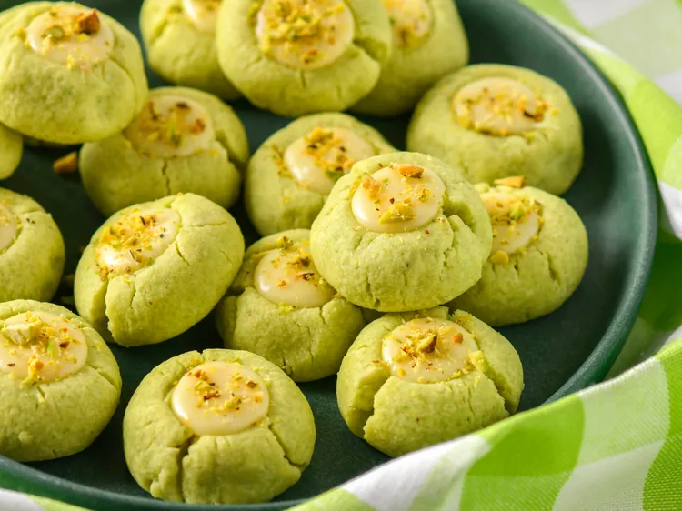
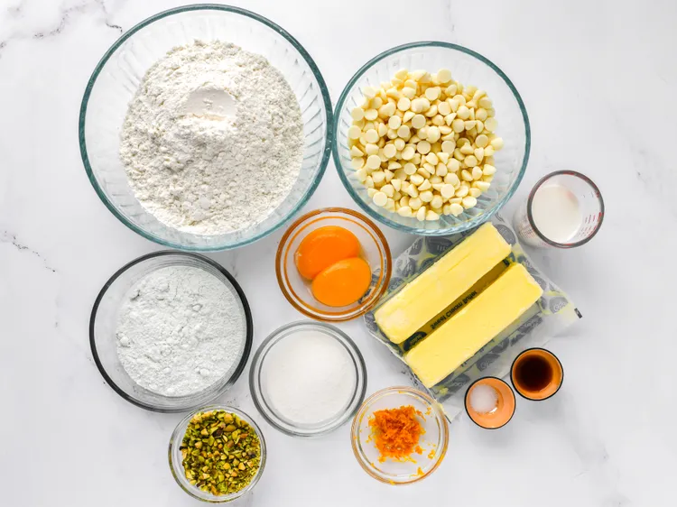
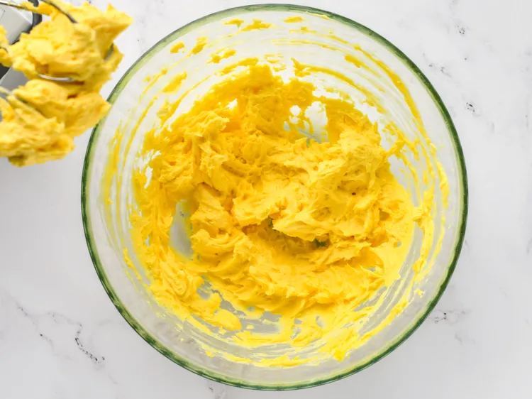
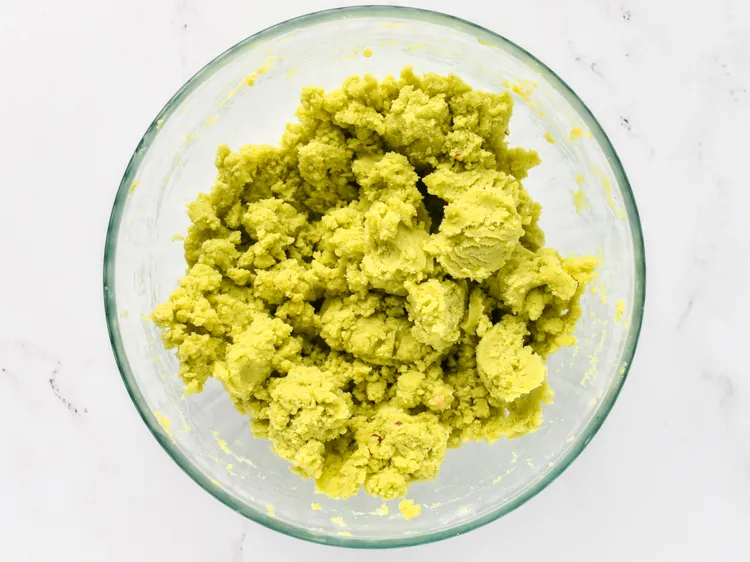
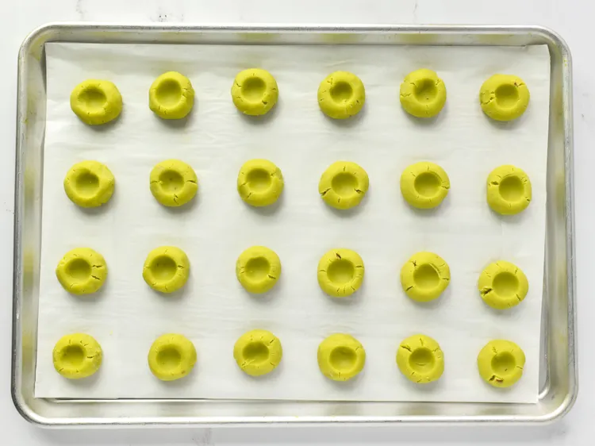
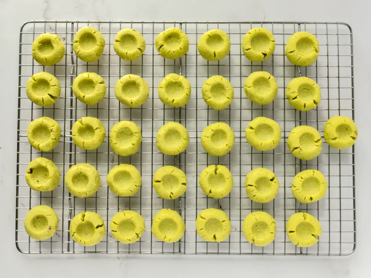
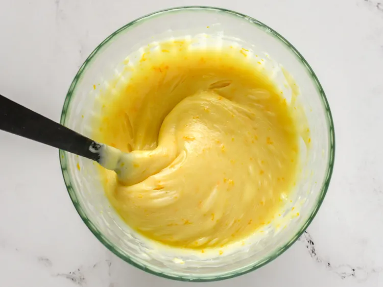
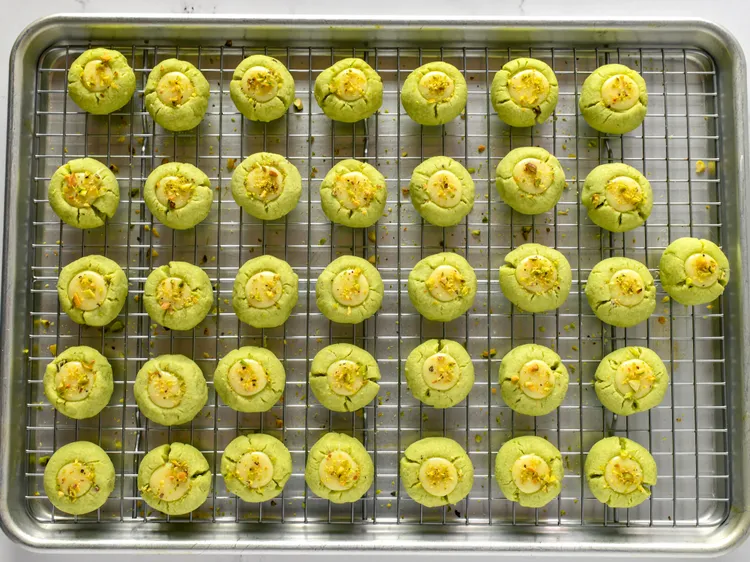

Nutty pistachio cookies filled with creamy, citrusy white chocolate are an impressive and tasty little treat!
Prep Time: 30 mins
Cook Time: 10 mins
Additional Time: 1 hr
Total Time: 1 hrs 40 mins
Servings: 36
Yield: 36 cookies
Gather all ingredients.

Combine butter, sugar, egg yolks, and vanilla extract in large bowl. Beat using an electric mixer until well mixed.

Add flour, salt, and pudding mix; beat well. Chill dough in the refrigerator for 30 minutes.

Preheat the oven to 325 degrees F (165 degrees C). Line a baking sheet with parchment paper. Shape dough into 1-inch balls and place on the prepared baking sheets. Make an indentation in the center of each cookie with your thumb.

Bake in the preheated oven until lightly golden around the edges, 10 to 12 minutes. Remove from baking sheet and allow to cool on a wire rack, about 30 minutes.

Combine white chocolate chips, milk, and orange zest in a microwave-safe bowl. Heat in the microwave for 1 1/2 minutes, stirring every 30 seconds, until chocolate is melted and smooth.

Pour white chocolate mixture into a piping bag and pipe into the thumbprint of the cooled cookies. Sprinkle with chopped pistachios.
